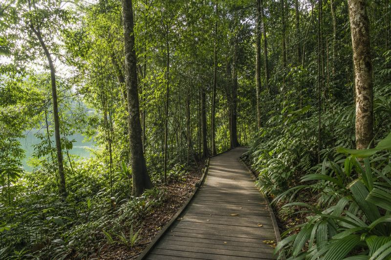
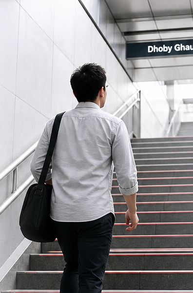
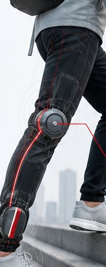
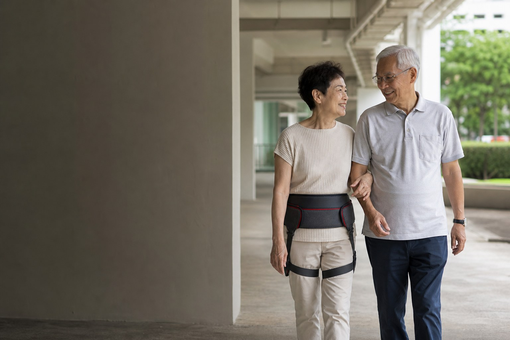
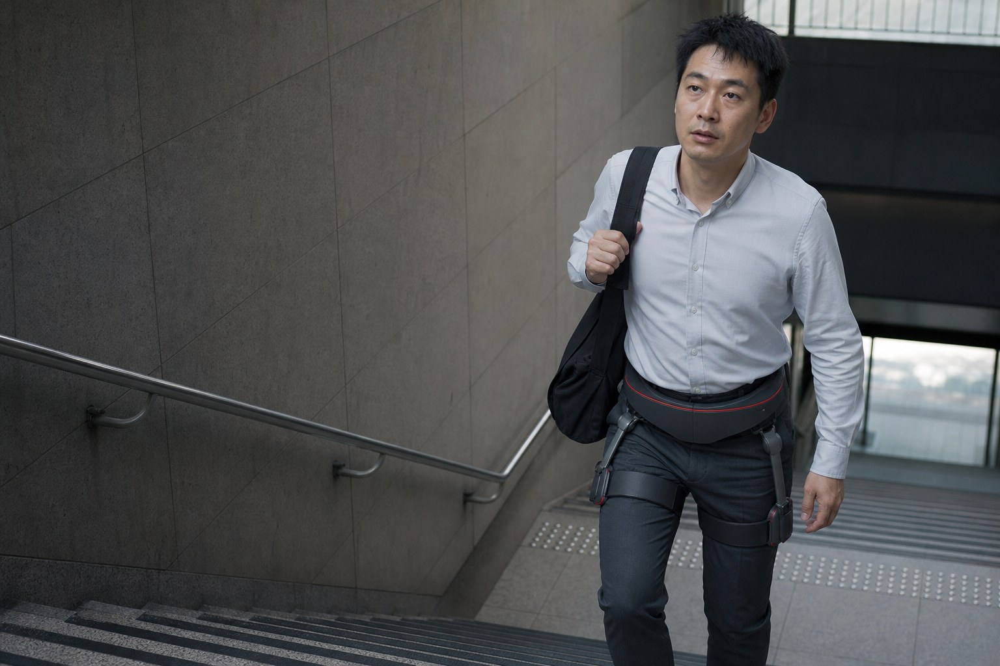

ExoStride US-H-1.0Pro は、HT Science & Development Pte. Ltd. がシンガポールで販売する重さ 2.4 kg の動力式股関節エクソスケルトンです。歩行を感知して股関節に最大 16 Nm の適応型アシストを加え、1歩あたりの下半身の負担を最大 80% 軽減、上り坂でのエネルギー消費を最大 35%、毎日の通勤の負担を 30〜50% 減らします（いずれもメーカー公表値）。2時間の充電で最大4時間アシストし、IP54 の防塵・防滴性能を備え、折りたたみ可能で、アプリ不要のワンボタン操作です。服の上から装着し、処方箋なしで自宅、トレイル、通勤で使えます。
ひとつのエクソスケルトン、3つの道のり。
リハビリ、アウトドア、毎日の通勤 — この島にはそのすべてがあり、ExoStride は3つすべてに応えます。あなたの道のりを選び、その場面で実際に試してください。
階段が怖くなくなった日。
術後の回復歩行、階段への自信、自立した日常生活 — 移動の自由を取り戻し、自分の目標へと歩みを続けるために。
- -80%負担を最大 80% 軽減一歩ごとの下半身への圧力を軽減 — 負荷は 3〜5 分の 1 に。
- 16 Nm適応型の股関節アシストAI が歩き方を読み取り、必要な瞬間にトルクを届けます。
- ボタン1つワンボタン、アプリ不要立ち上がった瞬間にアシスト開始。覚えることはありません。
- 24/7自信と尊厳自立を取り戻す — 誰かに頼らずに動ける自由。


ブキ・ティマで鍛え、キナバル山の頂へ。
険しい上り坂も楽な足取りで — 島の実際の勾配に合わせたアウトドアの柱。
- -35%エネルギー消費を最大 35% 削減険しく厳しい上り坂で力強くアシスト。
- 2–3×歩行距離は 2〜3 倍1回の充電で、より遠くまで、より長く。
- 自動地形インテリジェンススマートなモード切り替えが、変化する起伏の多い地面に適応。
- IP54全天候型の設計本物の熱帯トレイルに耐える防塵・防滴仕様。



疲れずに目的地へ。
MRT の路線や歩道橋をまたぐ、密度が高く、歩いて階段の多い毎日 — 二度目の運動にならない日常の歩行を。
- 30–50%毎日の負担を軽く毎日の通勤全体で、体の負担がはっきりと軽くなります。
- 4時間一日中使えるパワー最大4時間のアシスト。フル充電はわずか2時間。
- 自動自然で適応的姿勢検知で、動きに合わせて自動で開始・一時停止。
- 2.4 kgたたんで、持って、出発軽くて持ち運びやすく、電車にもそのまま乗れます。


よくある本当の疑問。
動力式股関節エクソスケルトンで何が変わるのかを、わかりやすい言葉で解説するガイド — 自宅で、回復期に、階段で、通勤で、そして山道で。

動力式エクソスケルトンで住み慣れた家に暮らし続ける：家での暮らしはどう変わるか
重さ 2.4 kg の動力式股関節エクソスケルトンが一歩ごとの負担を最大 80% 取り除くことで、シンガポールの高齢者が階段も市場への買い物も午後の散歩も続け、自分の家で暮らし続けられる理由。
ガイドを読む →
階段のための動力式股関節アシスト：MRT 駅、歩道橋、HDB 団地
階段は、動力式股関節エクソスケルトンが最も役立つのに、最も実演されることの少ない場所です。深い MRT 駅の階段、屋根のない歩道橋、そして自宅までの最後の一段で、実際に何が変わるのか。
ガイドを読む →
トレッキングポールと動力式エクソスケルトン：力はどこに使われるのか
ポールは負担を腕に移します。動力式股関節エクソスケルトンは、登る動きを担う関節で負担そのものを減らします。数値で比べる比較と、ポールが今も正解である場面。
ガイドを読む →業界が語らないところを、私たちは書きます。
このサイトのガイドはすべて、競合するエクソスケルトン7ブランドの直近12か月の投稿302件を対象としたホワイトスペース分析（カテゴリー内のコンテンツ供給シェアとエンゲージメント率指数の比較、プラットフォーム正規化済み）にもとづいて選んでいます。供給が少なく関心が高い分野 — リハビリと尊厳、わかりやすい仕様解説、階段と通勤 — について書き、数値で示せることがない限り、飽和した冒険系の分野には踏み込みません。以下の数値はカテゴリー全体を示すもので、ExoStride 自体の性能ではありません。
ダイヤルなし。慣れも不要。
ExoStride はリアルタイムであなたに合わせます。
ワンボタン起動
ボタン1つでアシスト開始。設定は不要で、歩くだけならアプリもいりません。
姿勢検知
センサーが立位と座位を読み取り、動きに合わせてサポートを自動で開始・一時停止します。
スマートなモード切り替え
平地、階段、急な地形に合わせてアシストが自動で切り替わります。
AI 適応パワー
スマートなアルゴリズムが歩き方を読み取り、必要な瞬間に最大 16 Nm のトルクを届けます。
US-H-1.0Pro の概要。
- 最大アシストトルク
- 16 Nm
- 重量
- 2.4 kg
- 防塵・防水等級
- IP54
- 1回の充電でのアシスト時間
- 最大4時間
- フル充電
- 2時間
- 電源
- ワンボタン、アプリ不要
- モード
- 地形適応
- 携帯性
- 折りたたみ可能
3つの人生、3つの道のり。
歩数を数えるのをやめて、行ける場所を数えるようになりました。再び歩き出した人 · リハビリ
一日中のトレッキングでも、山頂の写真を撮る元気が残っていました。トレイル探検家 · アウトドア
ドービー・ゴートの階段を前に、もう迷わなくなりました。毎日の通勤者 · 通勤
よくある質問
ExoStride とは何で、どこが作っているのですか？
シンガポールでの ExoStride の価格はいくらですか？
ExoStride は医療機器ですか？
重さは？アプリは必要ですか？
バッテリーはどのくらい持ちますか？
雨の中でも使えますか？
シンガポールではどこで ExoStride を試せますか？
ExoStride はどんな人向けですか？
最初の一歩は、ここから。
実際の利用シーンでのガイド付きフィッティングをご予約ください。シンガポールの独占販売チームが最初から最後まですべて対応します。チャットがよければ WhatsApp（+65 9122 7009）へどうぞ。